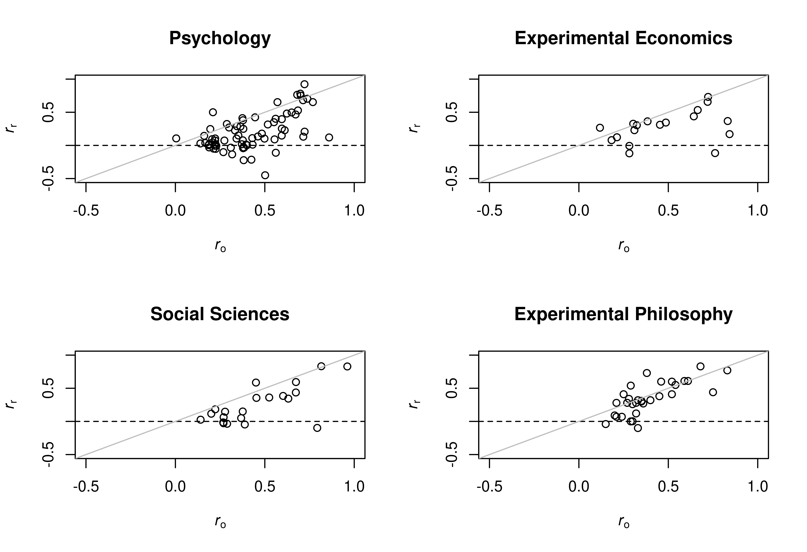

Data from Reproduciblity Project Psychology (RPP), Experimental Economics Replication Project (EERP), Social Sciences Replication Project (SSRP), Experimental Philosophy Replicability Project (EPRP). The variables are as follows:
studyStudy identifier, usually names of authors from original study
projectName of replication project
roEffect estimate of original study on correlation scale
rrEffect estimate of replication study on correlation scale
fisoEffect estimate of original study transformed to Fisher-z scale
fisrEffect estimate of replication study transformed to Fisher-z scale
se_fisoStandard error of Fisher-z transformed effect estimate of original study
se_fisrStandard error of Fisher-z transformed effect estimate of replication study
poTwo-sided p-value from significance test of effect estimate from original study
prTwo-sided p-value from significance test of effect estimate from replication study
noSample size in original study
nrSample size in replication study
data(RProjects)
Format
A data frame with 143 rows and 13 variables
Source
RPP: https://github.com/CenterForOpenScience/rpp/
EERP: https://osf.io/pnwuz/
SSRP: https://osf.io/abu7k
EPRP: https://osf.io/4ewkh/
Details
Two-sided p-values were calculated assuming normality of Fisher-z transformed effect estimates. From the RPP only the meta-analytic subset is included, which consists of 73 out of 100 study pairs for which the standard error of the z-transformed correlation coeffient can be computed. For the RPP also sample sizes were recalculated from standard errors of Fisher z-transformed correlation coefficients. From the EPRP only 31 out of 40 study pairs are included where effective sample size for original and replication study are available simultaneously. For details about how the the data was preprocessed see supplement S1 of Pawel and Held (2020).
References
Camerer, C. F., Dreber, A., Forsell, E., Ho, T.-H., Huber, J., Johannesson, M., ... Hang, W. (2016). Evaluating replicability of laboratory experiments in economics. Science, 351, 1433-1436. doi: 10.1126/science.aaf0918
Camerer, C. F., Dreber, A., Holzmeister, F., Ho, T.-H., Huber, J., Johannesson, M., ... Wu, H. (2018). Evaluating the replicability of social science experiments in Nature and Science between 2010 and 2015. Nature Human Behaviour, 2, 637-644. doi: 10.1038/s41562-018-0399-z
Cova, F., Strickland, B., Abatista, A., Allard, A., Andow, J., Attie, M., ... Zhou, X. (2018). Estimating the reproducibility of experimental philosophy. Review of Philosophy and Psychology. doi: 10.1007/s13164-018-0400-9
Open Science Collaboration. (2015). Estimating the reproducibility of psychological science. Science, 349, aac4716. doi: 10.1126/science.aac4716
Pawel, S., Held, L. (2020). Probabilistic forecasting of replication studies. PLoS ONE. 15, e0231416. doi: 10.1371/journal.pone.0231416
See also
Examples
data("RProjects", package = "ReplicationSuccess") ## Computing key quantities RProjects$zo <- RProjects$fiso/RProjects$se_fiso RProjects$zr <- RProjects$fisr/RProjects$se_fisr RProjects$c <- RProjects$se_fiso^2/RProjects$se_fisr^2 ## Computing one-sided p-values for alternative = "greater" RProjects$po1 <- z2p(z = RProjects$zo, alternative = "greater") RProjects$pr1 <- z2p(z = RProjects$zr, alternative = "greater") ## Plots of effect estimates par(mfrow = c(2, 2), las = 1, mai = rep(0.65, 4)) for (p in unique(RProjects$project)) { data_project <- subset(RProjects, project == p) plot(rr ~ ro, data = data_project, ylim = c(-0.5, 1), xlim = c(-0.5, 1), main = p, xlab = expression(italic(r)[o]), ylab = expression(italic(r)[r])) abline(h = 0, lty = 2) abline(a = 0, b = 1, col = "grey") }## Plots of peer beliefs RProjects$significant <- factor(RProjects$pr < 0.05, levels = c(FALSE, TRUE), labels = c("no", "yes")) par(mfrow = c(1, 2), las = 1, mai = rep(0.9, 4)) for (p in c("Experimental Economics", "Social Sciences")) { data_project <- subset(RProjects, project == p) boxplot(pm_belief ~ significant, data = data_project, ylim = c(0, 1), main = p, xlab = "Replication effect significant", ylab = "Peer belief") stripchart(pm_belief ~ significant, data = data_project, vertical = TRUE, add = TRUE, pch = 1, method = "jitter") }## Computing the sceptical p-value ps <- with(RProjects, pSceptical(zo = fiso/se_fiso, zr = fisr/se_fisr, c = se_fiso^2/se_fisr^2))